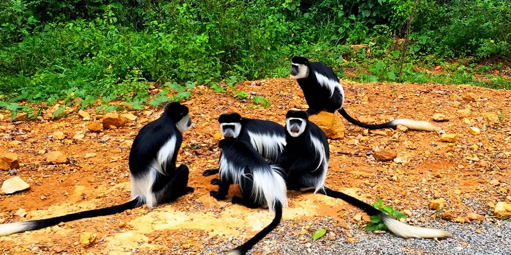

Kidepo does not feel like the easy answer, and that is part of its allure. Reaching Uganda's far northeast takes commitment,
but the reward is a safari landscape that feels startlingly open, untamed, and self-possessed. Here, distance itself becomes
part of the atmosphere. By the time you arrive, you already know you have come somewhere few travelers make the effort to see.
The first impression is space. Plains run toward mountain walls. Dry riverbeds cut through the land like pale scars. Light
settles differently here, sharper in the day, softer and dustier by evening. Even before the first animal appears, the park
feels cinematic in a way that more familiar safari circuits often do not.
Kidepo's beauty is not polished. It is raw, spare, and deeply confident. That is why people who love it tend to speak about it
with unusual devotion, as though they are trying to describe not just a park, but a mood that is hard to replicate elsewhere.
Wildlife Feels Bigger In A Place Like This
Because Kidepo is so open and so quiet, wildlife sightings carry a different emotional weight. Herds seem to belong to the land
rather than to a route. Predators feel genuinely part of the atmosphere instead of timed rewards on a game drive. Even common
safari species can look newly impressive when framed by so much empty horizon.
The park's remoteness also changes your attention. You watch the landscape more carefully. You notice how animals use shallow
channels, where birds gather, how the color of the grass shifts with the wind. Kidepo encourages observation rather than hurry,
which is one reason it feels so satisfying to travelers who value place as much as sightings.
The Power Of Isolation
In more crowded destinations, beauty is often interrupted by movement around you. In Kidepo, the surrounding stillness becomes
part of the experience. There are stretches where you can hear little beyond the vehicle, the wind, and the occasional call of
birds in the distance. That silence gives the park unusual authority.
It also changes the evenings. Sunset here does not feel like the end of an activity. It feels like a handover from one mood of
the landscape to another. The mountains darken, the heat leaves the air, and the valley seems to expand just as visibility fades.
It is a place that keeps working on you even when nothing dramatic is happening.
Who Should Put Kidepo On Their List
Kidepo is ideal for travelers who want a stronger sense of discovery. It suits repeat safari visitors, photographers, and anyone
who would rather have fewer crowds and more atmosphere. It is also a compelling choice for travelers who want Uganda to surprise
them beyond the better-known western circuit.
The park asks for time and intention, so it works best for people willing to shape part of the trip around the destination rather
than squeeze it into a rushed program. When handled that way, it rewards with something rare: a safari that still feels genuinely wild.
Why Kidepo Becomes A Story People Retell
Long after the journey, what people describe is usually the feeling of being far away in the best possible sense. They remember
the road, the openness, the layered mountains, the improbable calm. They remember that the park seemed to keep one foot outside
the ordinary flow of tourism.
That is why Kidepo deserves its reputation as a hidden gem. It offers not just wildlife, but a sense of rarity. For travelers who
want Uganda to feel vast, bold, and gloriously less expected, there may be no stronger choice.